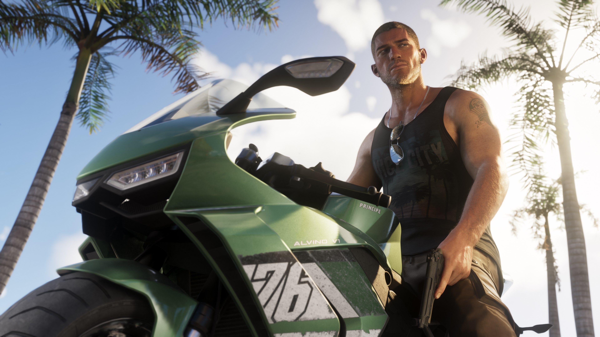
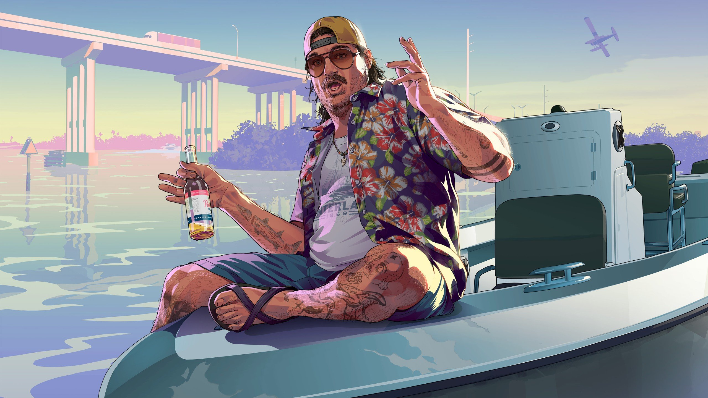
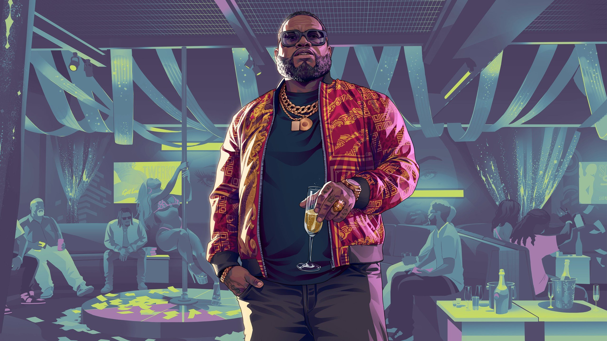
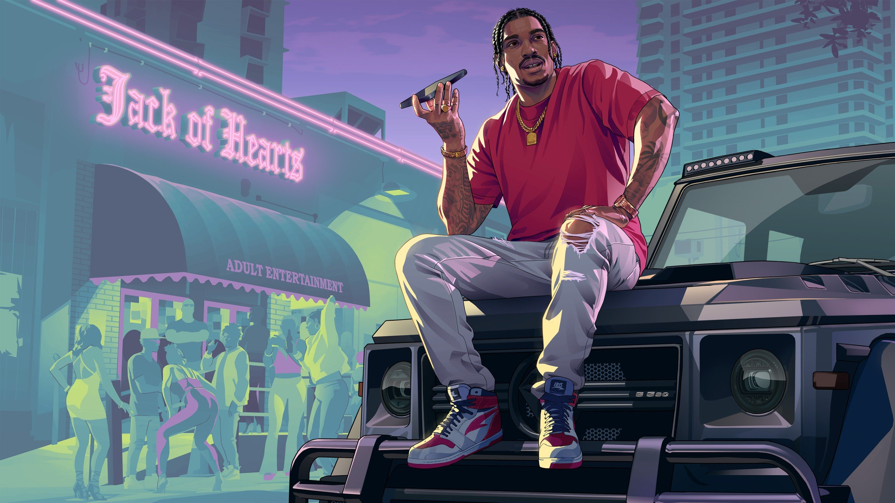
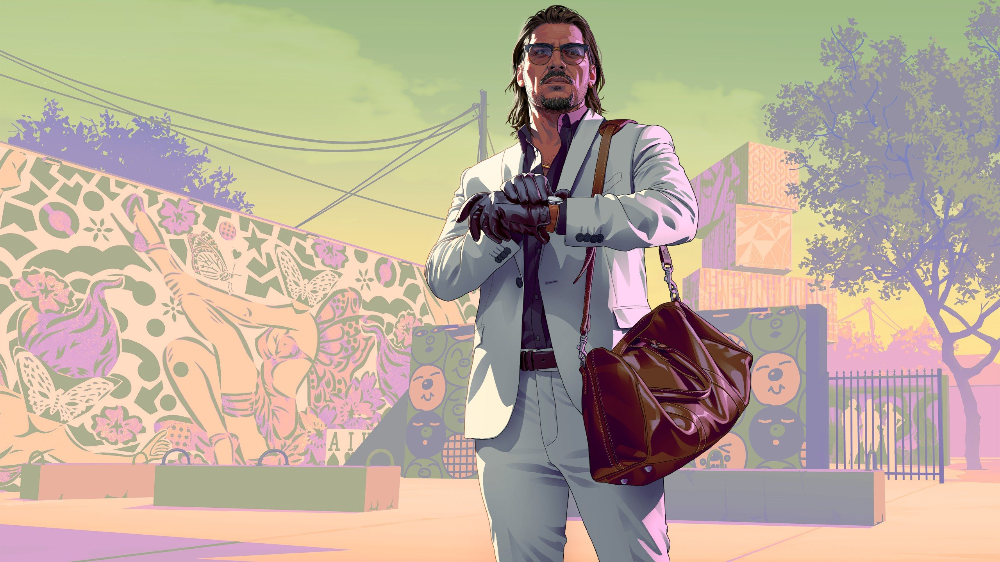
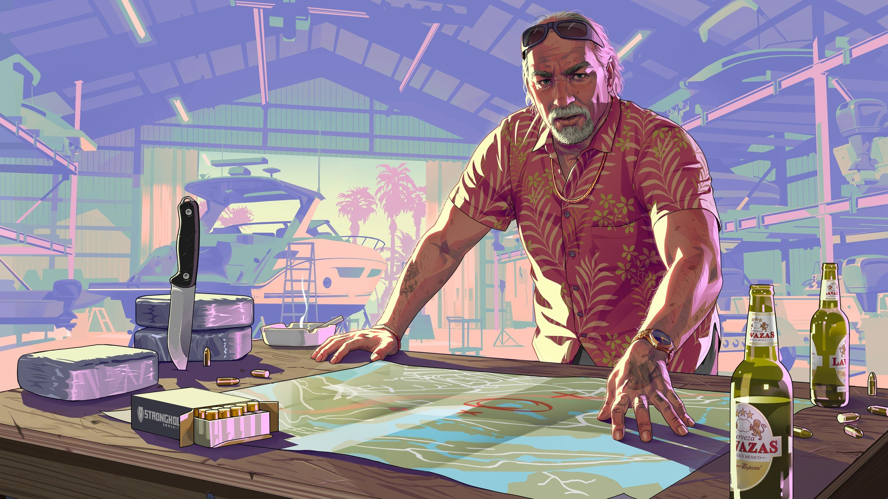

Protagonists
双主角
Lucia 是 GTA 系列历史上第一位女性主角。她曾因保护家人而犯下重罪，被送入 Leonida 州立监狱服刑。出狱后渴望重新开始，但 Leonida 不会轻易放过任何人。她来自 Liberty City，拉丁裔背景赋予了她坚韧的生存本能。
特殊能力：慢动作精准射击——聚焦单一目标，一击制敌。

Jason 曾在美国陆军服役，退伍后在 Leonida Keys 为当地毒贩跑腿。他冲动、直觉驱动、对危险有近乎上瘾的渴望。当他遇到 Lucia，他找到了一个既能理解他的黑暗面，又能让他看到另一种可能的人。
特殊能力：慢动作弱点标记——类似荒野大镖客2的死眼系统，高亮敌人弱点。
Supporting Cast
关键配角

Cal 是 Jason 的老友，一个充满偏执和阴谋论的家伙。他最安全的时候就是待在家里，监听海岸警卫队的通讯频道，喝着啤酒，打开浏览器的隐私模式。他的疑神疑鬼在关键时刻有时反而能救命。

Boobie 是 Vice City 的本地传奇人物——而且他自己也这么认为。他经营着一个庞大的商业帝国，从脱衣舞俱乐部到各种灰色地带的生意。任何想在 Vice City 混出名堂的人都绕不开他。

Dre'Quan 骨子里是个商人，不是匪徒。哪怕当初在街头贩毒时，进入音乐圈才是他真正的目标。现在他签下了 Real Dimez，正准备从 Boobie 的脱衣舞俱乐部起步，冲击 Vice City 的娱乐产业。

Raul 是一个经验丰富的银行劫匪，永远在寻找那些敢于承担最大风险以获取最大回报的人才。他的专业技能和冷静判断让他成为犯罪世界中令人敬畏的存在。

Brian 是 Keys 地区走私黄金年代的老牌毒品跑腿。如今他和第三任妻子 Lori 仍然通过船坞运作着走私生意，只不过他已经干够久了，让别人去做脏活。他是 Jason 在 Keys 的房东和早期雇主。